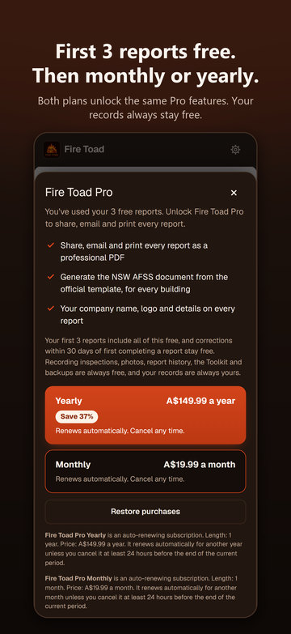

Free to download. Pro when you send reports.
Recording buildings, schedules, inspections, photos and defects is always free. Your first 3 reports include Pro. After that, Fire Toad Pro unlocks sending reports, the NSW statement document and your company branding.
Free
A$0
Free download, always free to record
- Buildings, schedules and measures
- Guided site inspections, photos and defects
- Report history, What's due and the AS 1851 logbook
- The Practitioner Toolkit and backups
- Your first 3 reports include Pro
Pro Monthly
A$19.99 a month
Auto-renewing subscription. Cancel any time.
- Share, email and print every report as a PDF
- The NSW AFSS or SFSS Word document from the official form
- Your company letterhead, signature and date on every report
- Your company on the Toolkit's Site log summary
Pro Yearly Saves 37%
A$149.99 a year
Auto-renewing subscription. Cancel any time.
- Exactly the same features as Monthly
- Saves 37% on 12 months of Monthly (A$239.88)
Prices are in Australian dollars and may vary by country. The Pro screen in the app shows the App Store price for your country before you subscribe. Nothing else is sold: there is no lifetime or one-off purchase.
Free and Pro, side by side
Your records are always yours. Pro is about what goes out of the app.
| What you can do | Free | Pro |
|---|---|---|
| Buildings, fire safety schedules and measures | Yes | Yes |
| Guided site inspections, photos and defects | Yes | Yes |
| Completed reports on screen, and report historyAfter your first 3, reports show as a locked preview | Yes | Yes |
| NSW statement drafts and the readiness check | Yes | Yes |
| What's due, the AS 1851 logbook and its CSV export | Yes | Yes |
| The Practitioner Toolkit, Codes and Learn | Yes | Yes |
| Backup and restore | Yes | Yes |
| Share PDF, Email report, Print / Save as PDF | First 3 reports | Every report |
| The NSW AFSS or SFSS as a Word documentFilled from the official NSW form | First 3 reports | Every report |
| Company letterhead, signature and date on reports | First 3 reports | Every report |
| Company on the Toolkit's Site log summary | No | Yes |

Your first 3 reports include Pro
Every user's first 3 reports include sharing, emailing, printing, your company branding and the NSW statement document. That's how you try Fire Toad on real jobs before paying anything: there's no separate free trial.
- A report uses a free slot the first time it is shared, emailed or printed. Drafts never use one.
- The building's statement document rides on its report's slot, so it doesn't use another.
- Each report says how many free reports you have left, or that it is one of your free reports.
- The count is kept in the iPhone Keychain, so reinstalling the app or restoring a backup doesn't reset it.
After your 3 free reports, reports stay complete and readable on screen, as a locked preview: PRO badges on the export buttons, the Fire Toad emblem in place of your company, a PREVIEW, FIRE TOAD PRO watermark, and text that can't be selected or copied. Tapping a locked button opens the Pro screen and says why.
Corrections within 30 days stay free
Found a mistake in one of your free reports? Fix it and complete it again within 30 days of first completing it, and it doesn't use another free report. An amended report gets a suffix on its reference (-A1, -A2) and an "Amended report" line. Completing it again after the 30 days counts as a new report.
Monthly or Yearly
Both plans unlock exactly the same features. Yearly costs A$149.99 a year, which saves 37% on 12 months of Monthly at A$19.99. Both are auto-renewing subscriptions on your Apple Account, and Pro keeps working offline on site: a renewal that hasn't reached the phone yet gets 3 days' grace.
Switching plans
Switching between Monthly and Yearly happens in your Apple Account settings, not in Fire Toad. Open Toolkit → Fire Toad Pro → Manage subscription, or on your iPhone go to Settings → your name → Subscriptions, and choose the other plan. Apple makes the change and shows you when it starts.
Bought Fire Toad before version 1.3?
Thank you. Anyone who bought Fire Toad before 1.3 (version 1.2.0 or earlier) keeps Pro for good, at no extra cost. You don't need to subscribe: Toolkit → Fire Toad Pro shows Pro as active. If it doesn't, email firetoad42@gmail.com.
How to cancel
- Open Toolkit → Fire Toad Pro → Manage subscription, or on your iPhone go to Settings → your name → Subscriptions.
- Choose Fire Toad Pro, then Cancel Subscription.
Cancel at least 24 hours before your renewal date to avoid being charged for another month or year. Pro stays on until the end of the period you've paid for. After that, your records are still yours: recording stays free and reports stay readable on screen.
Buying for a team
Fire Toad has no team accounts. Each practitioner uses it on their own iPhone, with their own records, and Pro belongs to the Apple Account that subscribes. The straightforward way for a business is for each practitioner to subscribe on their own iPhone.
Offer codes
If you've been given a Fire Toad Pro offer code, redeem it in the App Store. Fire Toad itself doesn't take codes.
- On your iPhone: open the App Store, tap your account picture, then Redeem Gift Card or Code, and enter the code.
- With a redeem link: open the link you were given on your iPhone. Redeem links look like this, with your code in place of CODE:
https://apps.apple.com/redeem?ctx=offercodes&id=6818058403&code=CODE
Apple shows the offer and its renewal terms before you confirm, and each code has its own terms (some are for new subscribers only). A redeemed code arrives as an ordinary Yearly subscription, so you manage or cancel it like any other.
Questions
Does Fire Toad work offline?
Yes. The whole app is built into the iPhone app, so buildings, inspections, photos, reports and the standards search all work with no signal. Your subscription is remembered, so Pro opens unlocked on site. Subscribing or restoring a purchase needs a connection to the App Store.
Where is my data kept?
On your iPhone. There's no account, no server, no cloud copy, no analytics and no advertising, and nothing leaves the phone unless you share it. Back up now saves everything as one dated file to Files, Mail or AirDrop. Deleting the app deletes your records, so keep a backup. See the privacy policy.
How do I get a refund?
Purchases go through Apple, so refunds do too. Request one at reportaproblem.apple.com.
Does it cover AS 1851?
Each measure on a schedule comes with its AS 1851 service frequency, each building has an AS 1851 servicing logbook you can export as CSV, and the Toolkit summarises AS 1851-2012 and cites clause numbers in its own words, never the text of the standard. Fire Toad is a record-keeping and reference tool: assess against the building's fire safety schedule and your own licensed copies of the standards.
Is it only for NSW?
The statement workflow is NSW only: the readiness check, the AFSS and SFSS drafts and the Word document use the official NSW form, and there are no other states' forms. Buildings, inspections, defects, reports and the logbook don't depend on the NSW forms.
Is there a free trial or Family Sharing?
No. Your first 3 reports take the place of a trial, and Pro is Monthly or Yearly only, without Family Sharing.
More help on the support page, or email firetoad42@gmail.com.